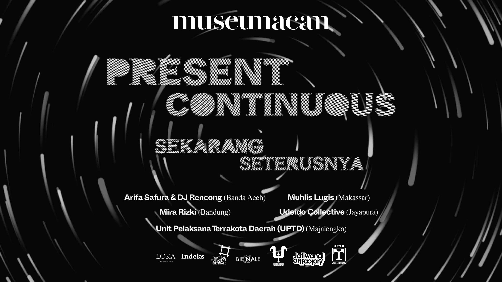
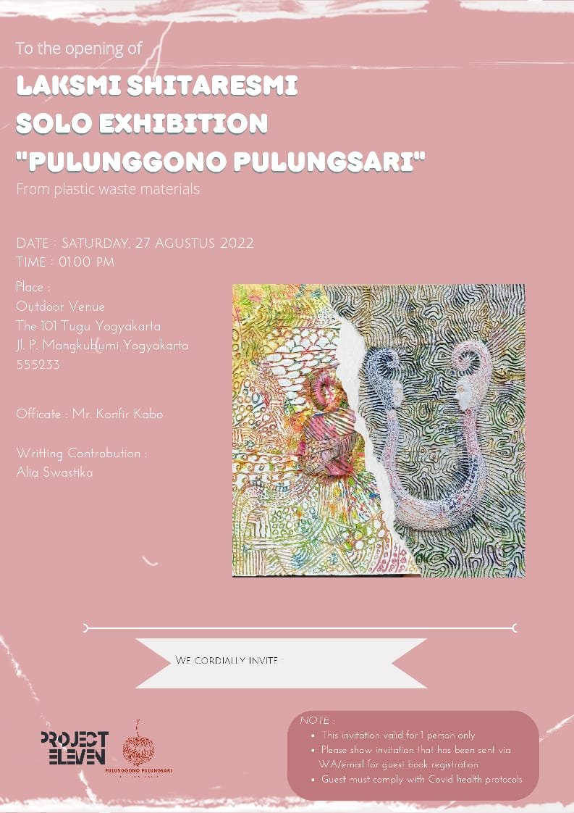
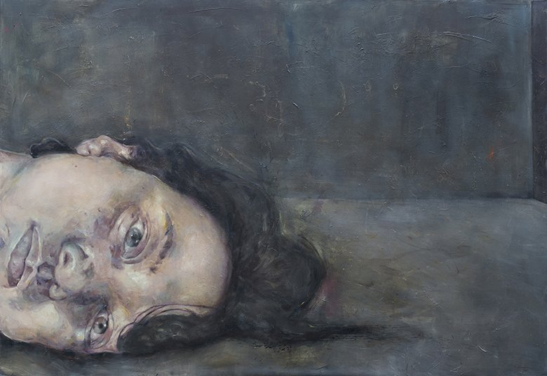
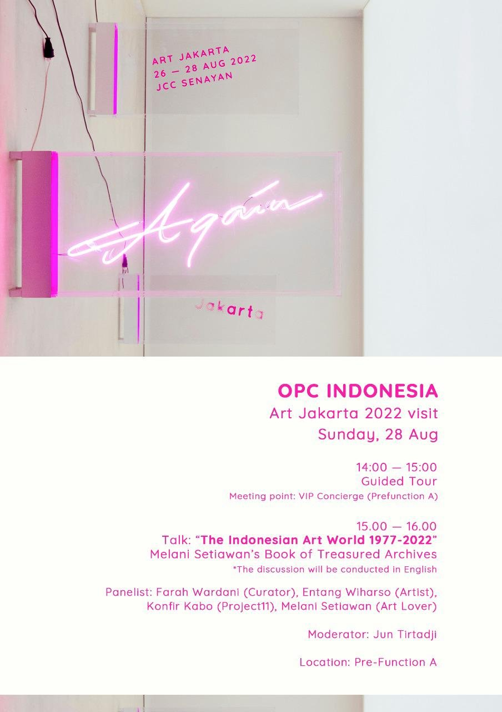
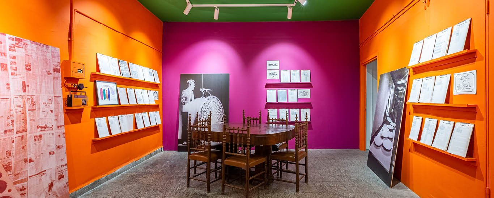
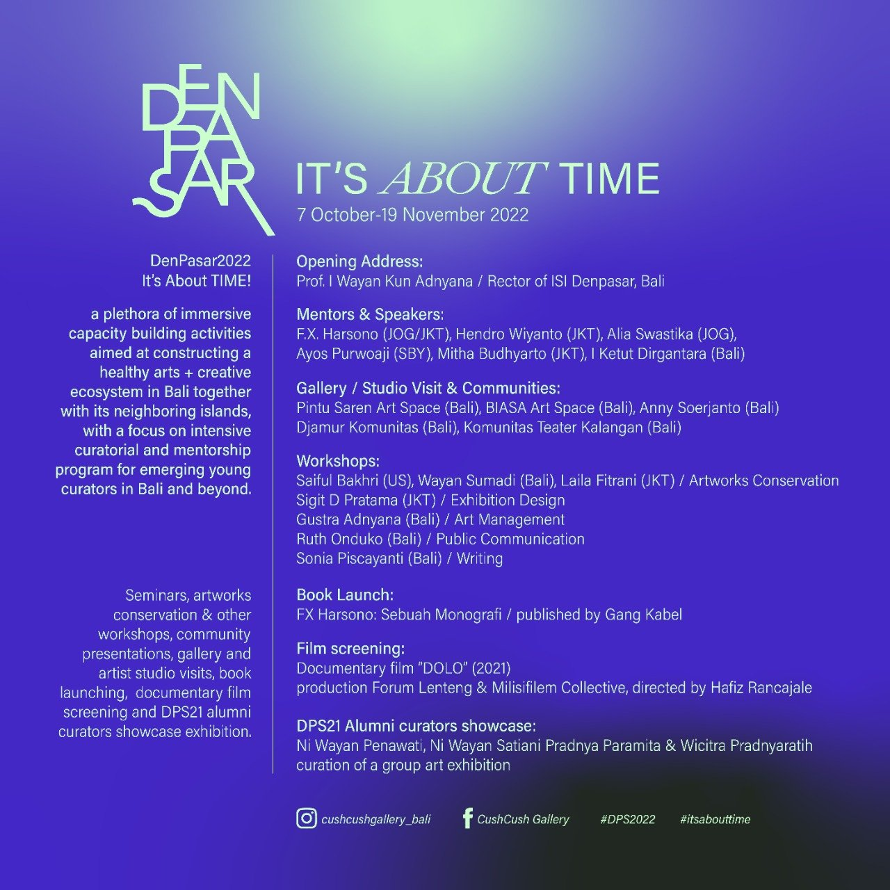
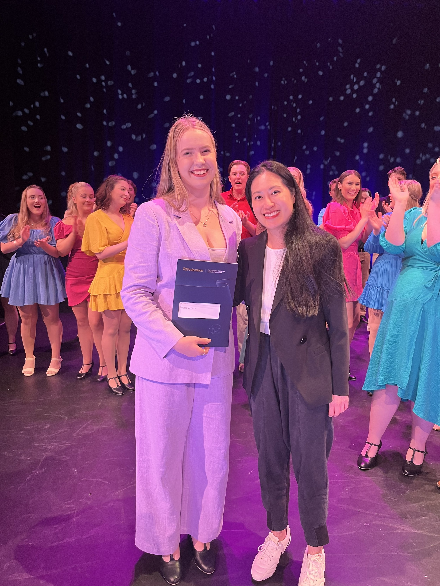

Dancing Shadow by Arifa Safura and DJ Rencong.

Aaron Seeto (Director, Museum MACAN) - Present Continuous / Sekarang Seterusnya was initiated by Museum MACAN as a result of the COVID-19 pandemic in Indonesia. The COVID-19 Pandemic has required us to imagine new ways to connect artists and audiences, as well as to think differently about how to undertake research and collaboration.
From the COVID-19 disruption, new forms of creativity, collaboration, and support have emerged. Present Continuous / Sekarang Seterusnya has developed through collaboration with some of Indonesia’s most vital arts organizations and contemporary art biennales. In the Indonesian context, where both access to technology and geography pose barriers to participation, organizational collaboration is one way to work through these limitations. Together with our collaborating partner organizations, we have commissioned four artists and two art collectives to develop new work for this exhibition, they have been supported by a curator connected to the artist’s local area. More than just an exhibition in Jakarta, Present Continuous / Sekarang Seterusnya is designed as a platform to give voice
to artistic communities over a larger geographic context, connecting them through a program of talks, presentations,
and online group discussions.
Present Continuous / Sekarang Seterusnya opens critical strands of conversation represented by different perspectives and practices, where we learn about artists and local cultural issues that impact communities across the country. In this exhibition and throughout the related online programs, we explore how artists navigate complex local and national politics; collective memory; histories of sound and their relationship to ideas of ‘neighborhood’; mythology and plants; and artist-led ‘creative’ industries that result in real policy change and ground-up economic development, from geographic that spans from Banda Aceh, Bandung, Majalengka, Makassar, to Jayapura.
9-24 July 2022

27 August 2022
with Arts House

WED 7 SEP - FRI 21 OCT 2022
POST OFFICE GALLERY, FEDERATION UNIVERSITY
Showcasing select work by seven contemporary Indonesian women artists, EM I BODY uncovers personal stories and unspoken truths while revealing common states of pride, tenacity and personal endurance.
Here, an oversized canvas and stilled imposing woman’s gaze, contrasts with the blurred silhouette and video of a woman behind glass painting herself in and out of the picture. Conversely, depictions of naively painted distorted figures act to reclaim the artist’s body and sexuality, while works created from carbon copies, and from human hair, symbolise the act of protection and nurturing between mother and child.
Featuring Audya Amalia, Ayurika, Dita Gambiro, Erika Ernawan, I Gusti Ayu Kadek Murniasih (Murni), Theresia Agustina Sitompul (Tere) and Restu Ratnaningtyas, artists present visually compelling work in diverse media that examine women’s familial and personal relationships, sexuality, identity, nostalgia and memory.
Image: AYURIKA Lost #2, 2020 oil on canvas H200 x W300 cm Courtesy the artist

Talk: “The Indonesian Art World 1977-2022” Melanie Setiawan’s Book of Treasured Archives



Project Eleven is proud to present the Performing Arts Prize and Visual Arts Prize for the outstanding graduate of the year at Federation University.